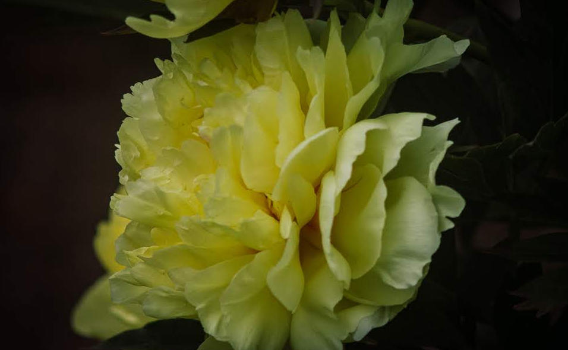
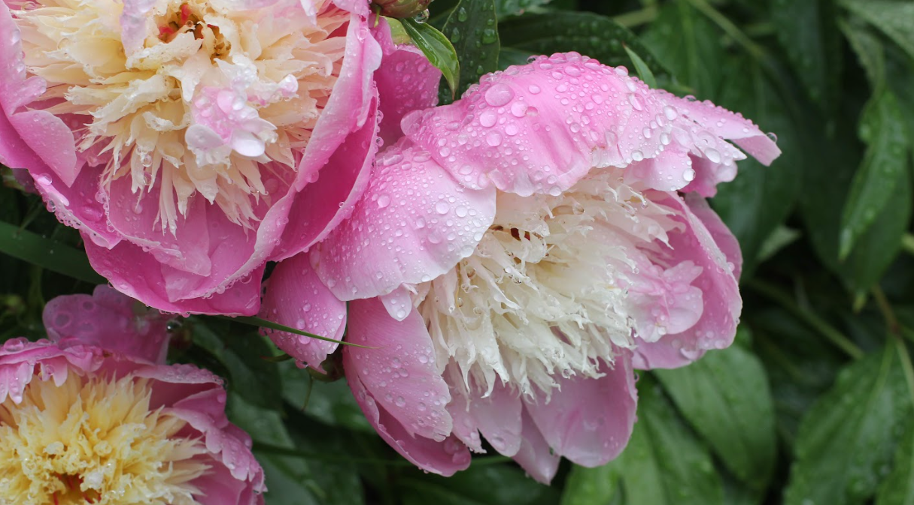
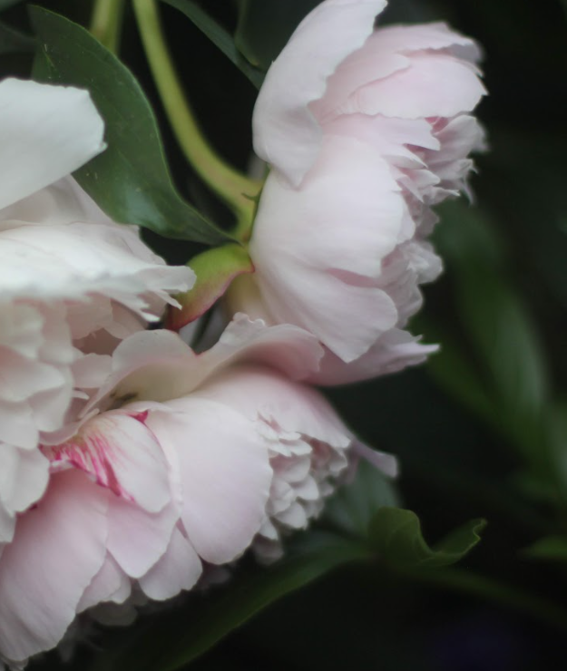

The History & Symbolism of Peonies
For centuries, peonies have captivated cultures around the world with their lush petals, rich fragrances, and deep symbolic meanings. These flowers are more than just a garden favorite—they hold a storied history and are revered in art, mythology, and cultural traditions. From ancient China and imperial Japan to European floral designs, peonies have represented wealth, honor, love, and good fortune.
Whether used in traditional medicine, royal gardens, or romantic celebrations, the history and color symbology of peonies make them one of the most cherished flowers in the world.
The History of Peonies
Peonies in Ancient China
Peonies have been cultivated in China for over 2,000 years, earning the title "King of Flowers" in Imperial gardens. They were initially grown for medicinal purposes—believed to cure everything from headaches to pain relief—before becoming a symbol of luxury, nobility, and honor.
During the Tang Dynasty (618–907 AD), peonies were so highly prized that they were planted exclusively in the Emperor’s gardens, and their value could rival that of gold.

- The city of Luoyang, home to China’s National Peony Garden, hosts an annual Peony Festival celebrating the bloom's importance in Chinese culture.
- Peonies remain a traditional gift for prosperity and success, often seen in Chinese New Year celebrations and wedding ceremonies.
Peonies in Japan
Peonies were introduced to Japan in the 8th century by Buddhist monks who valued them for spiritual and medicinal qualities. Over time, they became a popular motif in Japanese art, kimono embroidery, and woodblock prints. Known as "Botan" (牡丹) in Japanese, peonies symbolize bravery, respect, and good fortune and are often depicted alongside lions (shishi) in traditional art, representing strength and protection.
Peonies in Ancient Greece & Rome
The peony takes its name from Paeon, a Greek physician to the gods, who used the plant’s roots for healing. Greek mythology tells that jealousy among the gods led to Paeon being transformed into a beautiful flower, thus giving peonies their botanical name, Paeonia.

- The ancient Romans and Greeks used peony roots and seeds for medicinal remedies to treat illnesses and ward off evil spirits.
- Peonies were considered a sacred flower and were often planted in temples and healing gardens.
Peonies in European Gardens
During the Middle Ages, peonies were grown in monastery gardens for their medicinal properties and later became a staple in royal estates across France and England. By the 19th century, peonies gained popularity as ornamental flowers, with breeders in France and the Netherlands developing new varieties that expanded their colors and petal formations.
- Victorian England: Peonies were associated with romance, shyness, and good luck in love—a common wedding flower choice.
- Modern Europe: Peonies continue to be a favorite in wedding bouquets, high-end floral arrangements, and luxury perfume brands.
Peonies as Symbols of Luck & Fortune
Peonies have long been seen as harbingers of luck, success, and protection in various cultures.

- Peonies in Feng Shui
- Peonies are often planted near homes and businesses to attract positive energy, prosperity, and love. Red peonies, in particular, are thought to increase passion and strengthen relationships when placed in the bedroom.
- Peonies in Wealth & Success
- The rich, bushy foliage of peonies makes them excellent for adding depth and texture to garden beds. Combine them with graceful grasses, feathery ferns, or upright perennials like delphiniums and foxgloves to create a balanced mix of soft and structured elements.
- Peonies in Front Yard Landscaping
- In ancient China, merchants and nobles planted peonies in their gardens to symbolize financial success. Peonies were believed to bring good business fortune and were often used in imperial decorations.
- Peonies in Love & Marriage
- A classic wedding flower, peonies are said to bring a happy and lasting marriage. Giving peonies as a gift symbolizes wishing someone love, health, and happiness.
Peony Color Meaning
| Color | Symbolism & Meaning | Best Uses |
|---|---|---|
| Pink Peonies | Love, romance, happiness, femininity | Wedding bouquets, anniversary gifts, garden borders |
| White Peonies | Purity, new beginnings, humility, remembrance | Bridal arrangments, memorial services, sympathy gifts |
| Red Peonies | Passion, prosperity, wealth, deep emotions | New year celebrations, business openings, romantic occasions |
| Yellow & Gold Peonies | Happiness, joy, creativity, good luck | Housewarming gifts, business success, cheerful floral displays |
| Coral Peonies | Energy, enthusiasm, youthfulness | Modern gardens, vibrant floral arrangments, birthday gifts |
| Maroon & Deep Purple Peonies | Mystery, nobility, wisdom, transformation | Luxury floral designs, elegant events, royal-themed gardens |